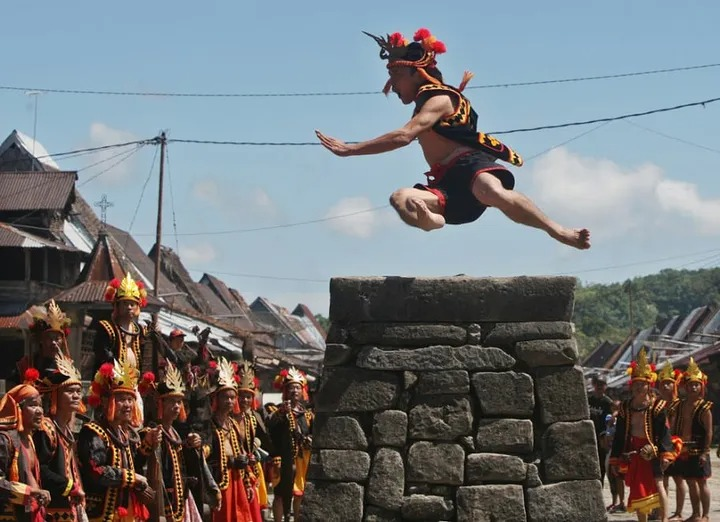

Sejarah Desa
Desa Hilisimaetanõ merupakan salah satu desa adat tertua di kawasan Maniamõlõ, Kabupaten Nias Selatan, Sumatera Utara. Desa ini telah berdiri sejak berabad-abad lalu dan sukses mempertahankan keaslian tatanan adat serta arsitektur megalitikumnya hingga hari ini.
Nama Hilisimaetanõ sendiri memiliki arti perbukitan yang teguh atau tanah yang menetap. Secara historis, desa ini dikenal sebagai perkampungan para kesatria yang tangguh, di mana tradisi peperangan zaman dahulu melahirkan budaya lompat batu (Hombo Batu) dan tarian perang yang legendaris.
Apa yang Terkenal di Sini?
Hilisimaetanõ merupakan desa wisata terkenal dengan budaya yang mendunia:
- Omo Hada: Rumah adat tradisional Nias berbentuk panggung dengan struktur kayu tanpa paku yang tahan gempa.
- Fahombo (Lompat Batu): Tradisi menguji kedewasaan pemuda desa dengan melompati tumpukan batu setinggi 2 meter.
- Famatö Harimao (Famadaya Harimao): Famatö Harimao adalah upacara yang dilakukan oleh orang Maenamölö di Nias Selatan dengan media patung harimau. Upacara ini biasa dilaksanakan saat pembaruan hukum adat fondrakö setiap tujuh tahun sekali. Famatö dalam bahasa Nias berarti pematahan. Hal ini berhubungan dengan pematahan patung setelah diarak. Meski namanya harimau, patung yang diarak tidak mirip harimau tetapi kombinasi badan anjing dengan kepala kucing dengan taring mencuat. Dalam upacara ini terdapat sejumlah patung harimau yang akan diarak hingga ke tepi jurang tempat patung itu dipatahkan lalu dibuang ke sungai. Patahan-patahan patung harimau yang hanyut oleh arus Sungai Gomo diyakini akan menghapus dosa yang telah dilakukan selama tahun-tahun sebelumnya. Saat ini, upacara Famatö Harimao dimodifikasi menjadi Famadaya Harimao (perarakan patung harimau), disesuaikan dengan nilai-nilai keagamaan yang dianut masyarakat Nias saat ini, diselenggarakan sebagai usaha melestarikan dan revitalisasi budaya Nias pada acara tertentu.
Galeri Kebudayaan & Visual
Berikut adalah visualisasi kekayaan adat yang ada di Desa Hilisimaetanõ:




Lokasi Google Maps
Desa Hilisimaetanõ terletak di Kecamatan Maniamõlõ, Kabupaten Nias Selatan, Provinsi Sumatera Utara. Anda bisa mengikuti rute peta di bawah ini untuk berkunjung: